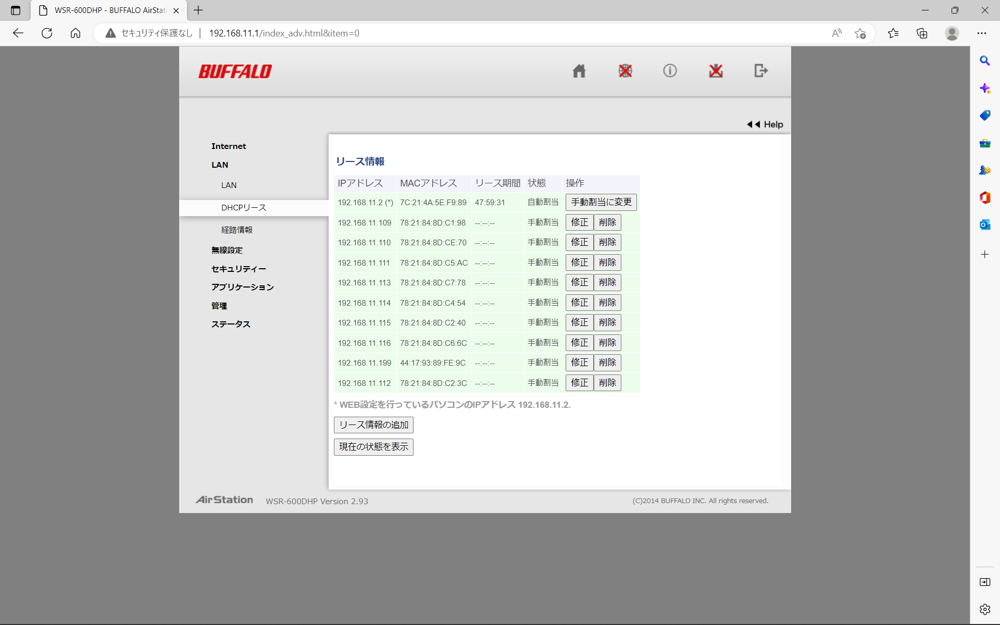
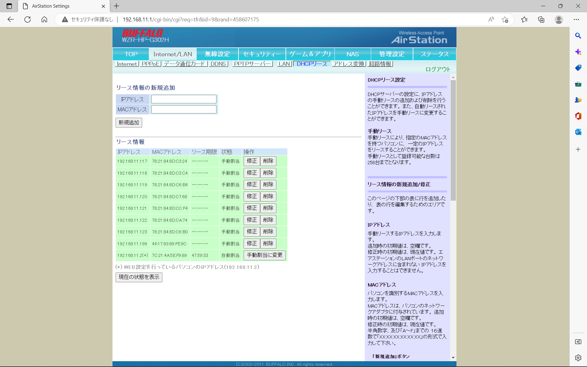

1台そこそこで実験する分には何の問題もありませんでしたが，
20台一斉動作させると画像を最小の96x96，またはQQVGA(160x120)程度まで落とさないとレスポンスが悪すぎることが判明．
ESP32をアクセスポイントにするソフトAPの限界を感じました．
それならばと某研究室から使わなくなったルータを拝借し，これをAPに仕立て上げるしかありません．
機種バラバラですが3台提供していただきました．
この方式を敬遠していたのは，ESP32をDHCPクライアントにしてしまうと，
カメラサーバ(M5camera)への接続時にIPが特定できない問題があります（シリアルモニタ等で確認する必要がある）．
ですが，ルータに割り当てるIPを固定する機能があればそれが解決できることに気が付きました．
ESP32のMACアドレスを調べ1台ずつ登録します．3台のAPに8台ずつ分散させました．


画像を見るタブレット側はペアとなるESP32と同じAPにWiFi接続します．
ESP32は2.4GHz帯のみですが，タブレット側が5GHz帯で接続できるならそれの方がいいかも．
SSIDが末尾aアリかナシかで2.4GHzと5GHzを区別できるようにしておきました．
ただ，今回の実験では5GHzがブチブチ切れたのでAPが怪しいかも？
もし自動ログインがONになっていると，右図のようにバッファローの案内がでてしまうので，
自動ログインはOFFにしておいた方が良いでしょう．
（この画像はiPhoneのものです．iPadでも同じ．）
iPad2台並べてチェックしましたが，とくに問題ありませんでした．あたりまえですねｗｗ
問題は20台の一斉動作に耐えられるかどうかですが，これはもうぶっつけ本番しかないですね．
テプラ貼り直しです．チマチマやりますｗｗ